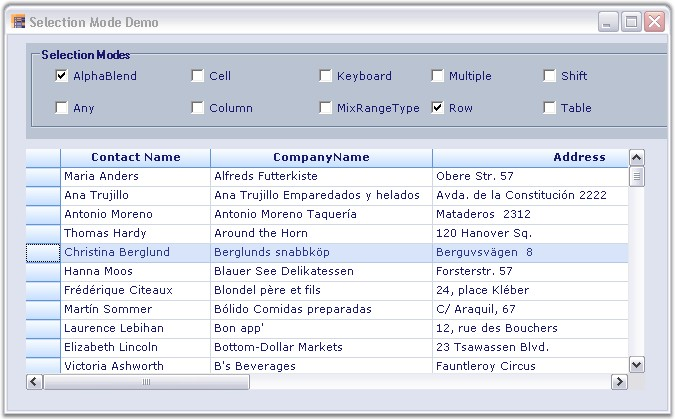

Essential Grid supports different selection modes for grid cells. A specific selection behavior can be set through the GridControl.AllowSelection property.
The following screen shot shows a window with a list of selection modes.

Figure 186: Selection Mode
Different types of selection modes are listed with their corresponding descriptions:
· The alpha blending to highlight selected cells can be achieved by using GridSelectionFlags.AlphaBlend option or selecting the AlphaBlend check box under Selection Modes group box in the UI.
· The default behavior for selecting cells, rows, columns, tables, multiple extending SHIFT key support, and alpha blending can be achieved by using GridSelectionFlags.Any option or selecting the Any check box under Selection Modes group box in the UI.
· Column selection can be achieved by using GridSelectionFlags.Column option or selecting the Column check box under Selection Modes group box in the UI.
· Row selection can be achieved by using GridSelectionFlags.Row option or selecting the Row check box under Selection Modes group box in the UI.
· An existing selection can be extended when a user holds the SHIFT key and uses the arrow keys by using GridSelectionFlags.Keyboard option or selecting the Keyboard check box under Selection Modes group box in the UI.
· Selection of both rows and columns simultaneously when multiple selection is enabled can be achieved by using GridSelectionFlags.MixRangeType option or selecting the MixRangeType check box under Selection Modes group box in the UI.
· Selection of entire table can be achieved by using GridSelectionFlags.Table option or selecting the Table check box under Selection Modes group box in the UI.
· Selection of multiple ranges of cells using the CTRL key can be achieved by using GridSelectionFlags.Multiple option or selecting the Multiple check box under Selection Modes group box in the UI.
· An existing selection using the SHIFT key can be extended by using GridSelectionFlags.Shift option or selecting the Shift check box under Selection Modes group box in the UI.
· Selection of cells using the CTRL key can be disabled by using GridSelectionFlags.None option or selecting the Cell check box under Selection Modes group box in the UI.
Setting Specific Selection Mode
Specific selection modes can be set by using the following code examples:
1. Using C#
|
[C#]
this.gridControl1.AllowSelection = GridSelectionFlags.Row; |
2. Using VB.NET
|
[VB.NET]
Me.gridControl1.AllowSelection = GridSelectionFlags.Row |